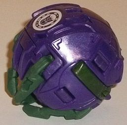
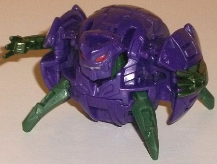
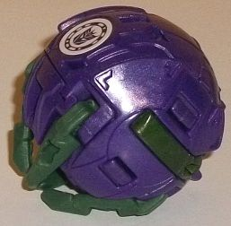
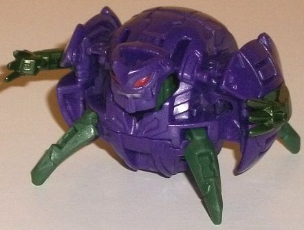
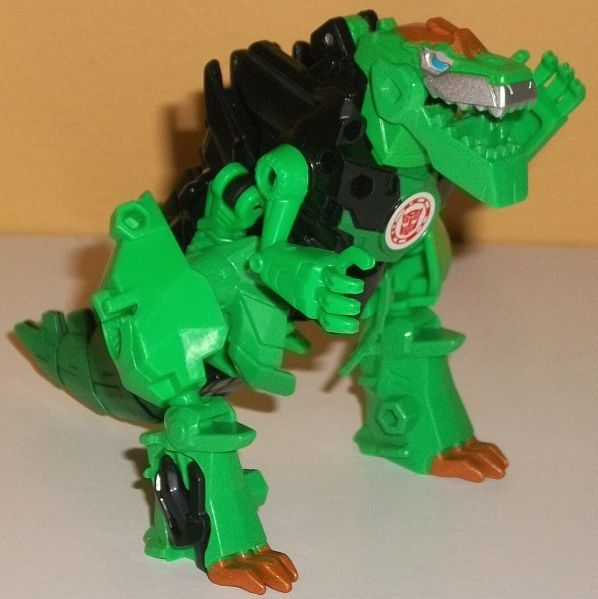
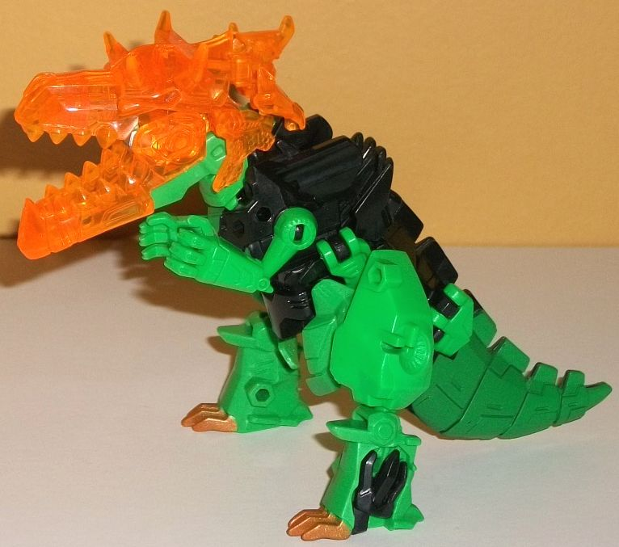
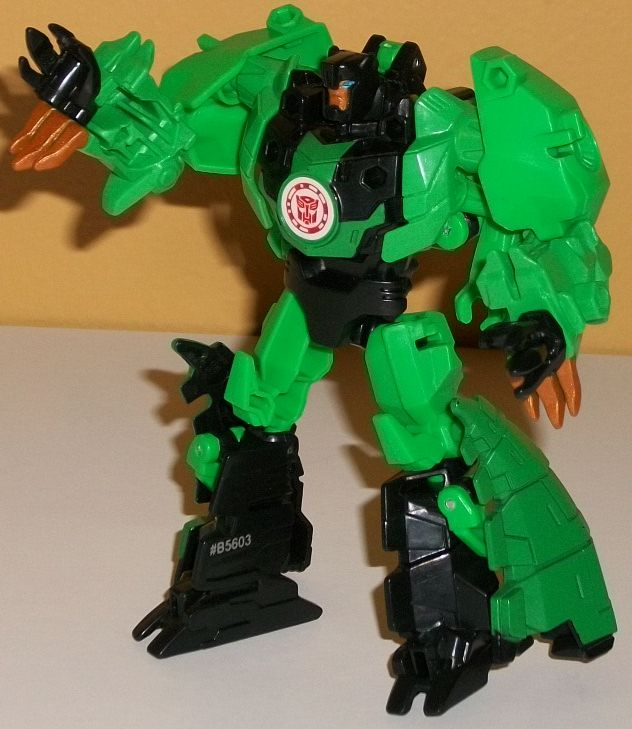
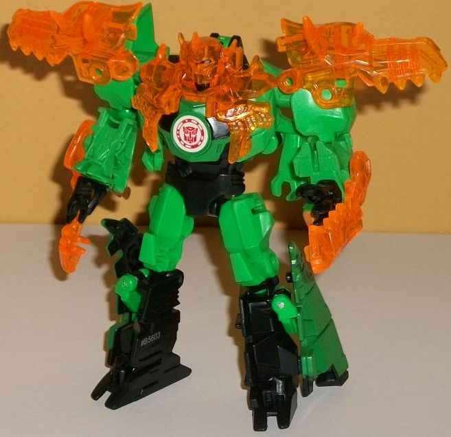

 
Allegiance: Decepticon
Size : Mini-Con
Difficulty of Transformation : Very Easy
Color Scheme : Milky semi-metallic purple, dark milky forest green, and some silver, dark metallic forest green, and moderately dark red
Individual Rating : 4.4
 Decepticon
Back
Decepticon
Back


Allegiance:
Decepticon
Size
: Mini-Con
Difficulty of Transformation
: Very
Easy
Color Scheme
: Milky semi-metallic
purple, dark milky forest green, and some silver, dark metallic forest
green, and moderately dark red
Individual Rating
: 4.4
(NOTE: Because this is a repaint, this is not a full-blown review. This mainly covers any changes made to the mold and the color scheme, and merely compares it to Decepticon Forth. For a review on the mold itself, read the review of Forth here .)
Back is a redeco of...
well.. Forth. So that makes sense. In keeping with their "two sides of
the same coin" schtick, Back's colors are basically swapped from Forth's--
that is, Back's main color and body are purple, while his limbs are green
this time around. The shade of purple is a bit different than on Forth,
though, likely due to the fact that Back's purple is plastic while Forth's
purple is paint. Back's purple is a really nice shade, being of a medium
semi-metallic shade-- that's right, there's a titch of glitter in it, which
looks great. As for the limbs, the legs are green plastic-- pretty much
the exact same dark forest green shade as on Forth's body. For the arms,
in a nice surprise, they're entirely painted a metallic forest green, which
is a REALLY nice color that honestly I wish was used a little on the body
or face as well. Speaking of the face, Back has darker red eyes than Forth,
and his upper teeth are painted silver as well. On the minus side, his
face is otherwise unpainted, including the horn. Double unfortunately,
Back doesn't come with the armor that Forth has, since the extra armor
bits go to the bigger 'Bot in a Mini-Con Battle Pack. However, if you wanted
to take Forth's armor bits and put them on Back, there's nothing stopping
you... Overall, though, I think for the colors, Back looks better, with
purple making for a slightly better main color than dark green-- plus it's
just a nice shade of purple. The metallic green paint on his arms is also
aces, and I'd take that over a few more paint apps on the face, all things
considered. The only reason he has a lower rating than Forth is because
of the lack of armor bits.
No mold changes have
been made to Decepticon Back.
 Grimlock
Grimlock




Allegiance
: Autobot
Difficulty of Transformation
: Medium
Color Scheme
: Black, moderately
light forest green, transparent orange, and some silver, metallic bronze,
and moderately light blue
Individual Rating
: 9.1
Grimlock's alternate
mode is replicated quite well on this "Battle" version of him, with the
proportions mostly based off of the
Warrior
class version
-- that is, largely show-accurate, but with a smaller
main body proportionally and, to a lesser extent, smaller legs. Still,
overall it's a pretty good replica of him in the show, and he's got all
the necessary mold details-- his three-fingered pseudo-T-rex arms, his
strong-jawed headsculpt with a "Godzilla"-like crest, some angular "plate-like"
details along his tail, and some circular vent-like details on the hips.
In fact, this mode takes a lot more from the Warrior class toy than just
the general proportions-- the construction of the toy is pretty similar
as well, with a few minor simplifications due to the smaller size. The
robot feet on the back don't quite mesh up with the upper back as well
as on the Warrior class version, but otherwise most of the Warrior class
toy's strengths and weaknesses are apparent here-- a bit of a split crotch
with the upper legs apparent down there, and the obvious robot hands on
the sides of the t-rex feet. Otherwise it's a pretty solid t-rex mode,
with some good articulation-- he can move at the jaw, shoulders, hips,
and legs, the latter two on balljoints, so he's pretty poseable for a t-rex.
The green plastic is a shade or two lighter than normal, but otherwise
Grimlock's color scheme is pretty accurate to his other toys. He's got
some metallic bronze on his headcrest and toe claws, some silver paint
on the upper part of his mouth, some light blue paint on the eyes, and
a bit of green paint on the chest and tail to break up that black a bit
more. Still, he definitely needs some more paint in this mode-- the details
on his t-rex arms, the circular vents on his hips, and the scales on his
upper back (which are left unpainted black) really need some desperately.
Grimlock's transparent extra armor bits are orange, which contrasts extremely
well with the green and black and is a great addition to the color scheme.
Compared to the other Wave 1 & 2 Mini-Con Battle Packs which have pieces
that form either robot armor or a large weapon, Grimlock's armor pieces
from robot mode instead combine together to form a... super-large t-rex
head over his existing t-rex head? It's kind of an odd choice, and honestly
I would've preferred a weapon. It's so large proportionally it makes Grimlock
look "superdeformed" in this mode with it on. That said, the details on
the jaw and head look pretty wicked, and the jaw can open and close just
like the "real" head underneath, so that's pretty neat.
Given that Grimlock's
overall structure in beast mode is similar to his Warrior class figure's,
it's no surprise that his robot mode is also very similar-- fold back the
t-rex arms a bit, turn the beast legs into the robot arms by folding them
up at the shoulders, flip the dino head back to reveal the robot head,
and fold down and separate the back sections to make his robot legs. The
only real difference here is that instead of folding up and storing in
the inside of his lower legs, the dino tail halves instead just sit outside
the lower legs on this one, folded up against them. To be sure, it's a
more obvious piece of kibble now, but given the size I can't fault them
for not being able to do that with the tail here, and at least the tail
halves stay up against the lower legs-- which would otherwise be a bit
too skinny proportionally-- and give them bulk without interfering with
articulation. And hey, it's a minor homage(?) to his classic G1 design,
anyways. As with the Warrior toy, the dino t-rex arms hanging down below
the arm bits are a bit of an eyesore, and the dino head just sits on the
upper back, but it's out of the way of articulation and doesn't stick out
from most angles. The major downside of this toy compared to the Warrior
version, though, is definitely the lack of paint. Way too much of Grimlock
is green in this mode-- his upper arms shouldn't be green and are completely
unpainted, and there's only supposed to be a green angular stripe across
his chest-- nearly all of his chest is green, here. The colors on the legs
are also flipped from the show model. Of course, he doesn't have the little
yellow highlights from the show model either, but on this small of a toy
that's honestly to be expected. He does have some nice metallic bronze
on his face, with light blue eyes, which looks great. For articulation
in this mode, he can move at the neck, shoulders, elbows, inwards at the
wrists, and at the hips and knees-- and nearly all of these are ball joints,
so he can pull off quite a range of motion. Regarding his armor pieces,
the lower jaw pieces go on his lower arms for some slice-'n-dice action,
his upper dino head & jaw pieces go on his shoulders, small pieces
go on the sides of his chest, and a larger helmet/upper chest piece fits
over his head. And.... heeey,
doesn't this
look kinda familiar
? Yep, this is a pretty nice little nod to Age of
Extinction Grimlock, with the "knight-like" look and the dino head halves
on the shoulders, in particular. But beyond that, it just looks cool and
gives Grimlock some nifty, spiky armor.
The Grimlock Mini-Con
Battle Pack is one of the best ones, overall. This is mainly because Grimlock
is a solid toy in both modes, borrowing heavily from the excellent Warrior
toy with only a few more minor downsides because of the smaller size. He
could certainly use more paint, but it's still a great toy, and his armor
is a particuarly awesome homage in robot mode, though his "super dino head"
idea isn't too great. Back is a bit of a substandard Mini-Con, but still
a decent accessory, and hey, if you've got Forth you've gotta have Back!
Recommended, especially if you don't have the Warrior version.
Reviews by Beastbot